[9-3] USART串口发送与接收 — 学习笔记
- 课程：江协科技《STM32入门教程-2023版 细致讲解 中文字幕》
- 视频：BV1th411z7sn?p=27，60:00（3600 秒）
- 素材：257 帧关键帧（每 14 秒，宽 1280px）+ PP-OCRv4 画面硬字幕 OCR（947 段）；关键截图 18 张随笔记收录（源图在
vidsum_out/stm32_p27/frames/，站内图片在assets/images/stm32-27/） - 字幕情况：该集 B 站没有 CC/AI 字幕，文本由画面烧录的中文字幕 OCR 得到（source=subtitle-ocr）；本集是 60 分钟长片，字幕里混入了大量 Keil Build Output（
compiling ...、linking...、"..\Objects\Project.axf" - 0 Error(s)、Flash Load finished at ...、Programming Done.），这些不是老师口述内容，已剔除，错字已按画面校正（清单见文末「存疑」）。 - 本集定位：这是模块 9（USART）的代码课，现场写两个程序——①
9-1 串口发送（只发不收）②9-2 串口发送+接收（查询法 + 中断法）。理论（USART 框图/帧格式/波特率/采样）全在 P26 [9-2]，本集只套用。片尾 59:26「目前只支持 1 个字节的接收……下一小节讲数据包」——多字节数据包（发送+接收）在 P28；本集无 DMA、无多字节协议。
一句话结论
本集把 P26 的 USART 外设理论落成两个工程。接线：USB 转串口模块的跳线帽插在 VCC-3V3（选 3.3V TTL 电平，STM32 是 3.3V 器件），模块 RXD → PA9（PA9 是 STM32 的 TX，发送接对方接收，要交叉）、模块 TXD → PA10（PA10 是 STM32 的 RX）、GND 共地（单端信号必须共地才能比较电平）；两边都有独立供电，电源正极不接，两个程序接线完全一样。程序一 9-1 串口发送 由 OLED 工程复制、新建 Serial.c/Serial.h。Serial_Init 四步：① RCC_APB2PeriphClockCmd 开 USART1 与 GPIOA 时钟（USART1 是 APB2 外设）② GPIO 配 PA9 为 GPIO_Mode_AF_PP 复用推挽输出（引脚定义表：USART1 TX=PA9、RX=PA10；若用 USART2/3 要查对应引脚）③ USART_Init 六成员：USART_BaudRate = 9600、USART_HardwareFlowControl = USART_HardwareFlowControl_None、USART_Mode = USART_Mode_Tx（接收时 Tx | Rx）、USART_Parity = USART_Parity_No、USART_StopBits = USART_StopBits_1、USART_WordLength = USART_WordLength_8b ④ USART_Cmd(USART1, ENABLE)（要接收就再加 USART_ITConfig + NVIC）。发送一个字节 Serial_SendByte：USART_SendData(USART1, Byte) 把数据写进 DR（库函数内部就是 USARTx->DR = (Data & 0x01FF)），然后必须等 USART_FLAG_TXE 置 1——while (USART_GetFlagStatus(USART1, USART_FLAG_TXE) == RESET);，因为数据从 TDR 转移到移位寄存器之前不能写下一个、否则会覆盖；而 TXE 在对 DR 的写操作时由硬件自动清零（手册 SR 位7），所以不用手动清标志位。在这个基础上封装：Serial_SendArray(uint8_t *Array, uint16_t Length)（for 循环逐个发）、Serial_SendString(char *String)（循环到 '\0'，字符串末尾编译器自动补结束标志、所以存储空间比字符数大 1）、Serial_SendNumber(uint32_t Number, uint8_t Length)（先自己写 Serial_Pow 次方函数，用 Number / Serial_Pow(10, Length - i - 1) % 10 + '0' 逐位取出并转成 ASCII 字符；Serial_Pow 不是库函数）。printf 三种移植方法（①最常用）：① 勾选 Keil 工程的「Use MicroLIB」，在 Serial.c 里 #include <stdio.h> 并重写 int fputc(int ch, FILE *f){ Serial_SendByte(ch); return ch; }——printf 底层就是往 fputc 输出字符，重定向后 printf 就打到串口了；② sprintf 格式化到字符串数组、再 Serial_SendString（不需要重定向）；③ 自己封装 Serial_Printf(char *format, ...)（va_list / va_start / vsprintf / va_end，要 #include <stdarg.h>）。中文乱码：要么 Keil 与串口助手都用 UTF8，并在 C/C++ 杂项里加 --no-multibyte-chars；要么两边都用 GB2312/GBK（不用加参数，兼容性更好）。程序二 9-2 串口发送+接收 由 9-1 复制、接线不变：GPIO 增加 PA10 配 GPIO_Mode_IPU 上拉输入（也可浮空，串口空闲是高电平所以不用下拉）、USART_Mode = USART_Mode_Tx | USART_Mode_Rx。接收有两种写法：查询法——主循环 if (USART_GetFlagStatus(USART1, USART_FLAG_RXNE) == SET) { RxData = USART_ReceiveData(USART1); ... }，读 DR 会自动清 RXNE；中断法——USART_ITConfig(USART1, USART_IT_RXNE, ENABLE) + NVIC_PriorityGroupConfig(NVIC_PriorityGroup_2) + NVIC_Init（通道 USART1_IRQn、抢占 1、子优先级 1—先随便给），在 USART1_IRQHandler 里读 DR 存到全局变量、置接收标志、调 USART_ClearITPendingBit 清挂起位，再封装 Serial_GetRxFlag()（读到标志后自动清零）与 Serial_GetRxData()。现象：串口助手 HEX 模式发 41 → OLED 显示 41、同时把 41 回传电脑；发 42 同理。
0. 本集定位：代码课（两个程序），多字节数据包在 P28
- 本集是纯代码课：00:00 看接线图 → 面包板接线 → 设备管理器确认 COM 口 → 复制 OLED 工程 → 新建
Serial模块 → 全程 Keil 写码/编译/下载 → 串口助手看现象；47:50 起复制改出第二个工程。 - 两个程序：①
9-1 串口发送（只发送）；②9-2 串口发送+接收（查询法/中断法各演示一遍）。 - 本集不涉及：DMA、多字节数据包协议（片尾 59:26 明确说「目前只支持 1 个字节的接收，下一小节讲数据包」）、
USART_ITConfig只配了 RXNE 这一种中断。 - 理论引用 P26 即可：USART 框图、TDR/RDR、TXE/RXNE、引脚映射、波特率公式，本笔记不再推导，详见
notes/stm32-26-USART串口外设.md。
1. 接线与工程准备
1.1 接线：模块 RXD→PA9、TXD→PA10、GND 共地
- 跳线帽：USB 转串口模块上的跳线帽要插在 VCC 和 3V3 这两个脚上，选择通信的 TTL 电平为 3.3V（上一集 P26 讲过：跳线帽既选电平又给 CH340 供电）；如果不是就拔下来换到这个位置；
- 通信引脚：模块的 TXD 和 RXD 要接到 STM32 的 PA9 和 PA10——为什么是这两个？查引脚定义表：USART1 的 TX 是 PA9、RX 是 PA10；我们计划用 USART1 通信，所以选这两个；如果要用 USART2/3，就要在表里找对应引脚；
- TX 和 RX 要交叉连接（这一点一定要注意、别接错）：PA9 是 STM32 的 TX（发送），接的是串口模块的 RXD（接收）；模块的 TXD（发送）接 STM32 的 PA10（RX，接收）；
- GND 共地：两个设备之间要把负极接在一起——单端信号是相对 GND 的电压，只有共地电平才有高低的参考（「就像两个人比身高，必须站在同一地平面上」）；一般多个系统互连都要共地；
- 供电：串口模块和 ST-Link 都插在电脑上，两边都有独立供电，所以通信的电源正极不需要接，只接 3 根线；
- 第一个程序只有 STM32 发送，所以理论上一根通信线就够；但第二个程序要接收，两根都要接——为了两个程序接线一致，干脆把两根都接上；
- 面包板接线：串口模块用 3 根公对母杜邦线：棕色 = GND → 电源负极、红色 = RXD → PA9、橙色 = TXD → PA10；两个 USB 都插电脑（USB 口不够可用拓展坞）；
- 驱动检查：
此电脑 → 属性 → 设备管理器，端口目录下能看到 USB-SERIAL CH340（COM12）、有 COM 号且图标没有感叹号就说明驱动正常；否则要装驱动（第二节软件安装里讲过）。
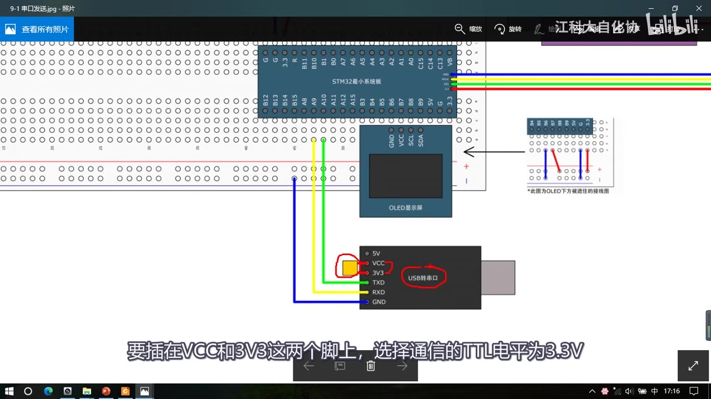
图 1：接线图 9-1 串口发送——右下是 USB 转串口模块（5V/VCC/3V3/TXD/RXD/GND，红圈标出跳线帽插在 VCC-3V3 上），画面用蓝/黄/绿杜邦线（口述里说的棕/红/橙是另一种配色，见存疑），把 GND→电源负极、RXD→PA9、TXD→PA10 接起来；上方是 STM32 最小系统板与 OLED；字幕「要插在VCC和3V3这两个脚上，选择通信的TTL电平为3.3V」
1.2 工程准备
- 复制 OLED 工程，改名
9-1 串口发送，删掉原来的代码、编译； - 老规矩给串口新建模块：
Serial.c / Serial.h，在Serial.c里写void Serial_Init(void)； - 初始化流程（照 P26 的 USART 基本结构图）：① 开 USART 和 GPIO 时钟 → ② 配 GPIO 引脚 → ③ 用
USART_Init结构体配 USART 参数 → ④USART_Cmd开启；如果还需要接收，就在开启 USART 之前再加USART_ITConfig和 NVIC 的代码——「整个初始化流程非常中规中矩」； - 初始化完成后：发送数据调发送函数、接收数据调接收函数、获取发送/接收状态调获取标志位的函数——这就是 USART 外设的使用思路。
2. Serial_Init：程序一（只发送）
2.1 时钟与 GPIO
#include "stm32f10x.h"
#include <stdio.h>
void Serial_Init(void)
{
/* ① 时钟：USART1 是 APB2 外设，GPIOA 也在 APB2 */
RCC_APB2PeriphClockCmd(RCC_APB2Periph_USART1, ENABLE);
RCC_APB2PeriphClockCmd(RCC_APB2Periph_GPIOA, ENABLE);
/* ② GPIO：PA9（USART1_TX）复用推挽输出 */
GPIO_InitTypeDef GPIO_InitStructure;
GPIO_InitStructure.GPIO_Mode = GPIO_Mode_AF_PP;
GPIO_InitStructure.GPIO_Pin = GPIO_Pin_9;
GPIO_InitStructure.GPIO_Speed = GPIO_Speed_50MHz;
GPIO_Init(GPIOA, &GPIO_InitStructure);
...
- USART1 挂在 APB2 上，所以开时钟用
RCC_APB2PeriphClockCmd(RCC_APB2Periph_USART1, ENABLE)；GPIOA 也在 APB2，一起开； - GPIO 引脚：从 LED.c 复制初始化代码，改成
GPIO_Mode_AF_PP（复用推挽）、GPIO_Pin_9、GPIO_Speed_50MHz； - 关于接收引脚 RX 的配置：普通输入模式和复用功能输入模式在库函数里是混在一起的，不用分——所以 RX 引脚就按普通输入配（浮空输入或上拉输入）：串口空闲状态是高电平，所以不能用下拉；具体用哪种可以看手册的「GPIO 配置推荐表」（一般：复用功能输出选复用推挽、输入选浮空或上拉均可）；
- 本程序只需要发送（用不到 RX 引脚），所以只配 PA9。
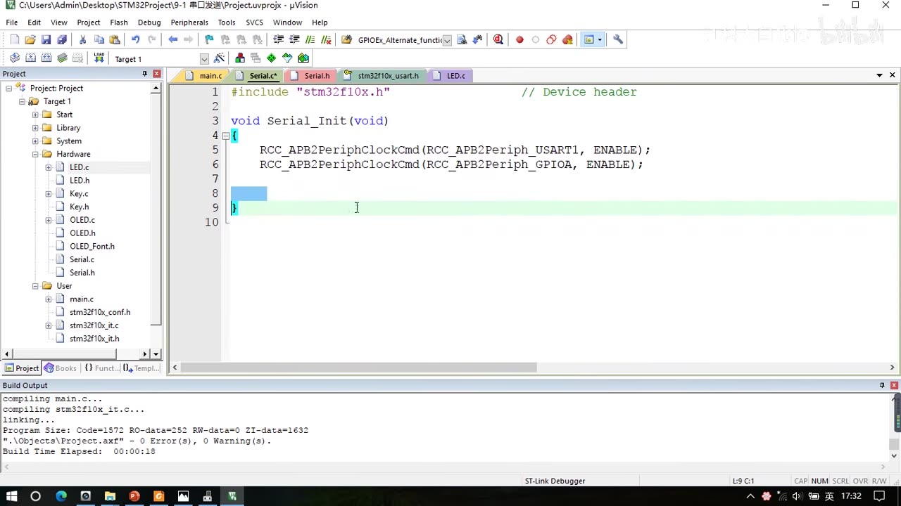
图 2：Serial.c 开头——#include "stm32f10x.h"、void Serial_Init(void)、RCC_APB2PeriphClockCmd(RCC_APB2Periph_USART1, ENABLE); 与 RCC_APB2PeriphClockCmd(RCC_APB2Periph_GPIOA, ENABLE);；左侧项目树 9-1 串口发送 的 Hardware 组下新增 Serial.c/Serial.h
2.2 USART_Init 六成员与 USART_Cmd
USART_InitTypeDef USART_InitStructure;
USART_InitStructure.USART_BaudRate = 9600;
USART_InitStructure.USART_HardwareFlowControl = USART_HardwareFlowControl_None;
USART_InitStructure.USART_Mode = USART_Mode_Tx;
USART_InitStructure.USART_Parity = USART_Parity_No;
USART_InitStructure.USART_StopBits = USART_StopBits_1;
USART_InitStructure.USART_WordLength = USART_WordLength_8b;
USART_Init(USART1, &USART_InitStructure);
USART_Cmd(USART1, ENABLE);
}
| 成员 | 程序一取值 | 说明 |
|---|---|---|
USART_BaudRate |
9600 |
直接写波特率数值，USART_Init 内部会自动算好对应的分频系数（P26 的 BRR/DIV），不用自己算 |
USART_HardwareFlowControl |
USART_HardwareFlowControl_None |
可选 None / CTS / RTS / CTS+RTS；我们不用流控，选 None |
USART_Mode |
USART_Mode_Tx |
可选 Tx / Rx；同时收发就 Tx | Rx；本程序只发送，选 Tx |
USART_Parity |
USART_Parity_No |
无校验 / 奇校验 / 偶校验；选无校验 |
USART_StopBits |
USART_StopBits_1 |
0.5 / 1 / 1.5 / 2 位；一般用 1 位 |
USART_WordLength |
USART_WordLength_8b |
8 位 / 9 位（含校验位）；不需要校验就选 8 位 |
- 组合起来就是最常用的参数：9600、8 位数据、1 位停止、无校验、无流控；
- 最后
USART_Cmd(USART1, ENABLE);开启 USART，初始化完成。
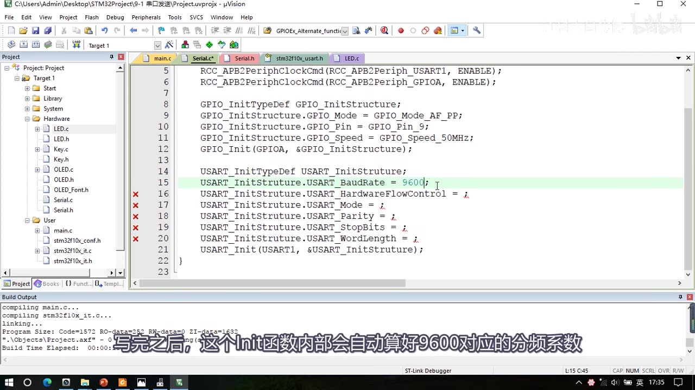
图 3：Serial.c 中段——GPIO 部分 GPIO_Mode_AF_PP/GPIO_Pin_9/GPIO_Speed_50MHz/GPIO_Init(GPIOA, …)；USART_InitTypeDef USART_InitStructure; 后正在填 USART_InitStructure.USART_BaudRate = 9600;（高亮），其余成员待填（红叉标记）；字幕「写完之后，这个Init函数内部会自动算好9600对应的分频系数」
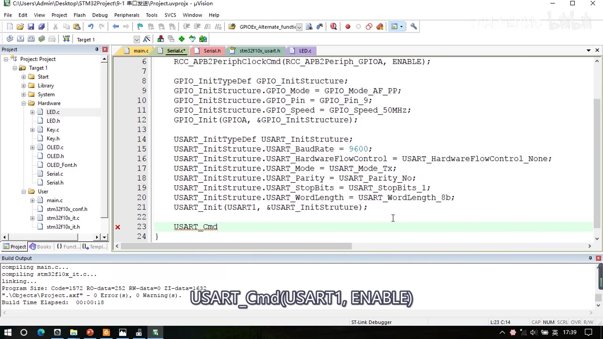
图 4：Serial.c 中 USART_Init 六成员填完——BaudRate = 9600、HardwareFlowControl = USART_HardwareFlowControl_None、Mode = USART_Mode_Tx、Parity = USART_Parity_No、StopBits = USART_StopBits_1、WordLength = USART_WordLength_8b，USART_Init(USART1, &USART_InitStructure);，以及正在输入的 USART_Cmd；字幕「USART_Cmd(USART1, ENABLE)」
3. 发送一个字节：Serial_SendByte
void Serial_SendByte(uint8_t Byte)
{
USART_SendData(USART1, Byte);
while (USART_GetFlagStatus(USART1, USART_FLAG_TXE) == RESET);
}
USART_SendData(USART1, Byte)：把数据写进 USART 的 DR 寄存器；看库函数源码，它内部就是USARTx->DR = (Data & (uint16_t)0x01FF);（把高 7 位清零，只保留 9 位数据）；- 写完之后数据会通向 TDR → 再由硬件转移到发送移位寄存器 → 通过 TX 引脚发送出去——这一步单片机内部软硬件高度配合，我们不用管；
- 为什么调用完还要
while等待：数据从 TDR 转移到移位寄存器之前，不能再写下一个，否则会数据覆盖——所以写完 DR 要等USART_FLAG_TXE（发送数据寄存器空）置 1 再返回； USART_GetFlagStatus(USART1, USART_FLAG_TXE)：第一个参数选 USART，第二个参数选要检查的标志位——可选的有 CTS（CTS 改变）、LBD（LIN 断开检测）、TXE（发送数据寄存器空）、TC（发送完成）、RXNE（接收数据寄存器非空）、IDLE（空闲检测）、ORE（溢出错误）、NE（噪声错误）、FE（帧错误）、PE（校验错误）；- TXE 需要手动清零吗？不用：看手册 SR 位7 TXE——「当 TDR 寄存器中的数据被硬件转移到移位寄存器的时候，该位被硬件置位；如果 USART_CR1 中的 TXEIE 为 1 则产生中断；对 USART_DR 的写操作，将该位清零」——所以写 DR 时它自动清零，下次发送前会自动置位。
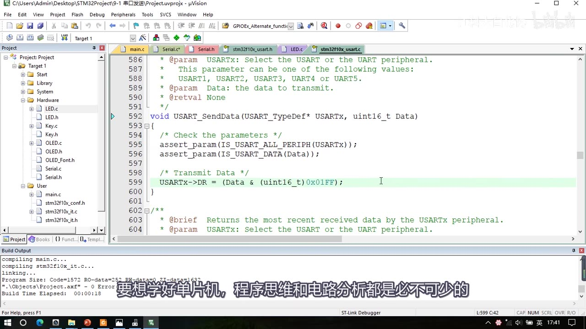
图 5：stm32f10x_usart.c 里 USART_SendData 的源码——void USART_SendData(USART_TypeDef* USARTx, uint16_t Data)，函数体 USARTx->DR = (Data & (uint16_t)0x01FF);（高亮）；字幕「要想学好单片机，程序思维和电路分析都是必不可少的」
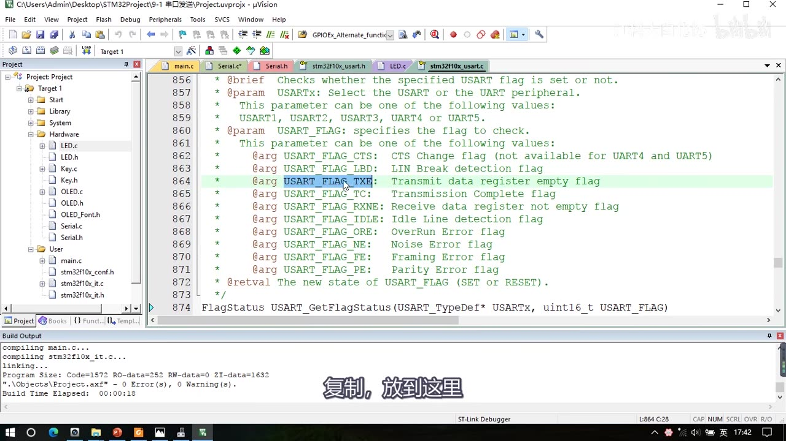
图 6：USART_GetFlagStatus 的注释参数列表——@arg USART_FLAG_CTS、LBD、USART_FLAG_TXE（高亮）、TC、RXNE、IDLE、ORE、NE、FE、PE；字幕「复制，放到这里」
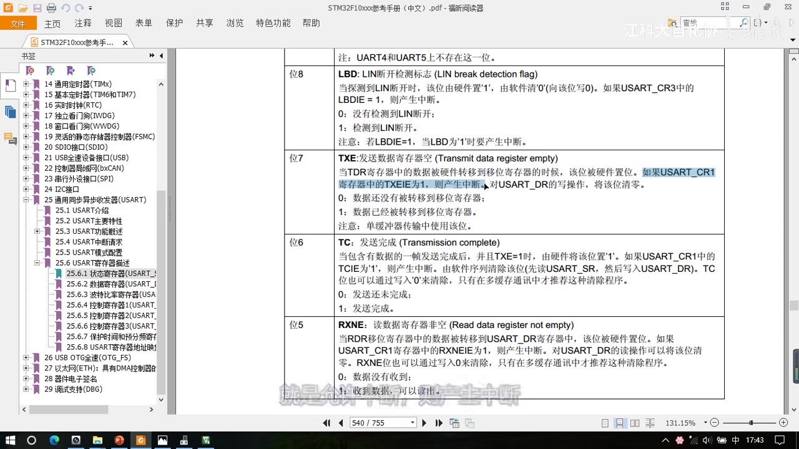
*图 7：参考手册 USART_SR 位说明——位7 TXE（发送数据寄存器空）：TDR 数据被硬件转移到移位寄存器时置位、TXEIE=1 产生中断、对 USART_DR 的写操作将该位清零、单缓冲器传输中使用；位6 TC（发送完成）；位5 RXNE（读数据寄存器非空）：RDR 数据转移到 USART_DR 时置位、读 DR 可清零*
3.1 现象：串口助手看发送
- 把
Serial_Init、Serial_SendByte放头文件声明、编译；main 里先Serial_Init()再Serial_SendByte(0x41)——上电初始化后就会通过串口发一次 0x41，TX 引脚产生波形； - 打开串口助手：选 COM 号，其他参数要与程序一致——波特率 9600、数据位 8、停止位 1、校验位无；按 STM32 复位后收到
41； - 接收模式：HEX 模式显示的是原始数据
41；文本模式会按字符集解析，0x41对应字符A——这就是 P25 讲过的「HEX/文本」区别。
4. 数据模式与 ASCII 码表
- HEX 模式 / 十六进制模式 / 二进制模式：以原始数据的形式显示——数据是什么就显示什么（只能显示 0～9、A～F 这些十六进制字符）；
- 文本模式 / 字符模式：以原始数据编码后的形式显示——把每个字节按字符集编码查表、显示对应的字符；
- ASCII 码表：
0x41=A、0x61=a、0x30～0x39=0～9、各种标点符号，还有不可见字符（0x00空字符、\r=0x0D、\n=0x0A、\t=0x09等）；0x00在字符串里是结束标志； - 汉字等多字节字符：ASCII 只有英文，中文要用 GB2312/GBK/GB18030 或 Unicode/UTF8 等字符集——「对应外国也有相应的字符集」；
- 收发模型：发送方把
0x41发到线上，接收方收到0x41——如果显示文本，发送方要先「编码」（把'A'编成0x41）、接收方再「译码」（把0x41解成'A'）； - 所以程序里
Serial_SendByte(0x41)与Serial_SendByte('A')发出去的是同一个数据。
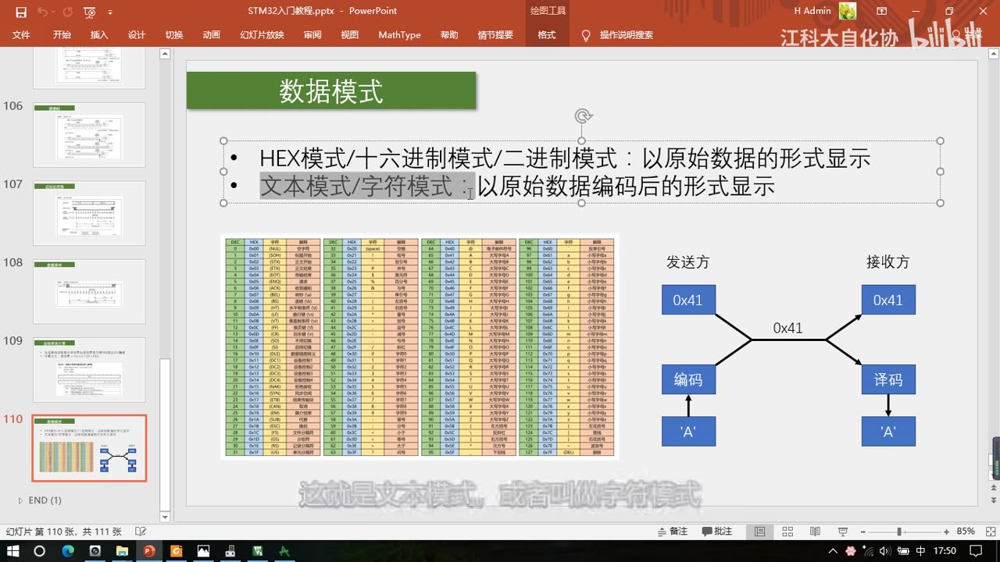
图 8：PPT「数据模式」——HEX模式/十六进制模式/二进制模式：以原始数据的形式显示；文本模式/字符模式：以原始数据编码后的形式显示；左侧 ASCII 码表（DEC/HEX/字符/解释），右侧收发模型：发送方 0x41 → 线路 0x41 → 接收方 0x41，发送方下方「编码 ← 'A'」、接收方下方「译码 → 'A'」；字幕「这就是文本模式，或者叫做字符模式」
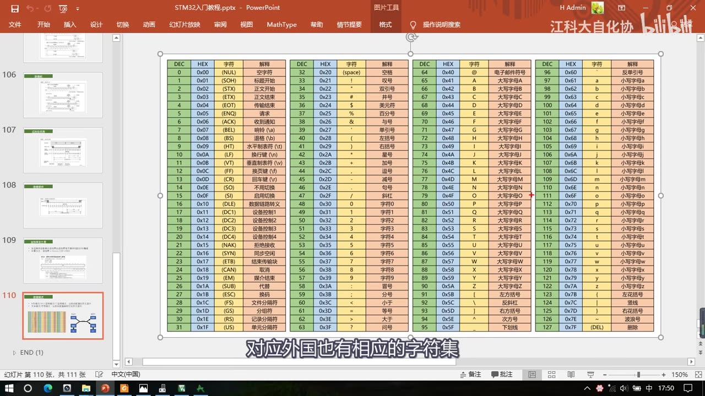
图 9：ASCII 码表全页——DEC/HEX/字符/解释四列（0～127）：0x00 = (NUL) 空字符、0x41 = A 大写字母A、0x61 = a 小写字母a、0x30～0x39 = 字符 0～9 等；字幕「对应外国也有相应的字符集」
5. 封装常用发送函数
5.1 Serial_SendArray：发送数组
void Serial_SendArray(uint8_t *Array, uint16_t Length)
{
uint16_t i;
for (i = 0; i < Length; i ++)
{
Serial_SendByte(Array[i]);
}
}
- 参数：
uint8_t *Array（数组首地址）+uint16_t Length（长度）——数组本身没法判断什么时候结束，所以必须额外给长度；长度用 16 位够用（「发送个几 K 的数据都够」）； - 逻辑：for 循环执行
Length次、每次调用Serial_SendByte发一个字节； - 测试：定义
uint8_t MyArray[] = {0x42, 0x43, 0x44, 0x45};，Serial_SendArray(MyArray, 4)→ 串口助手收到42 43 44 45。
5.2 Serial_SendString：发送字符串
void Serial_SendString(char *String)
{
uint8_t i;
for (i = 0; String[i] != '\0'; i ++)
{
Serial_SendByte(String[i]);
}
}
- 字符串有结束标志，所以不需要长度参数：
for循环的条件是String[i] != '\0'（'\0'就是 ASCII 的0x00，空字符的转义字符表示形式）； - 写完字符串后编译器会自动补上结束标志位，所以字符串的存储空间比字符个数大 1；
- 现象：文本模式下显示
HelloWorld!；要换行就用转义字符\r\n——必须两个一起用（\r=0x0D回车、\n=0x0A换行，都是不可见的控制字符）。
5.3 Serial_SendNumber：发送数字（十进制拆位）
uint32_t Serial_Pow(uint32_t X, uint32_t Y)
{
uint32_t Result = 1;
while (Y --)
{
Result *= X;
}
return Result;
}
void Serial_SendNumber(uint32_t Number, uint8_t Length)
{
uint8_t i;
for (i = 0; i < Length; i ++)
{
Serial_SendByte(Number / Serial_Pow(10, Length - i - 1) % 10 + '0');
}
}
- 目标：把 Number 的个位、十位、百位……依次转成字符数字发出去，电脑上就看到「字符串形式的数字」；
- 十进制拆位的原理：取某一位 =
数字 / 10^x % 10——/10^x把这一位右边去掉，%10把左边去掉；以12345为例：/10000%10 = 1（万位）、/1000%10 = 2（千位）、/100%10 = 3（百位）…… - 先写一个次方函数
Serial_Pow（这是作者自己写的、不是标准库函数）：Result初值 1，while (Y --) Result *= X;循环乘 Y 次，返回X^Y； - 循环变量要反过来：
Length - i - 1——因为遍历是从 0 开始的，而10^0是个位，第一次循环要发最高位，所以指数是Length-1；例如Length = 2：第一次2-0-1 = 1（发十位）、第二次2-1-1 = 0（发个位）； - 最后要加 ASCII 偏移
+ '0'：字符'0'对应0x30，所以把数字 0～9 加上0x30（或直接写'0'）就变成字符'0'～'9'； - 测试：
Serial_SendNumber(12345, 5)→ 文本模式显示12345；SendNumber默认是十进制、无符号显示； - 其实
SendString/SendNumber和 OLED 的ShowString/ShowNum是一样的逻辑，可以对照看。
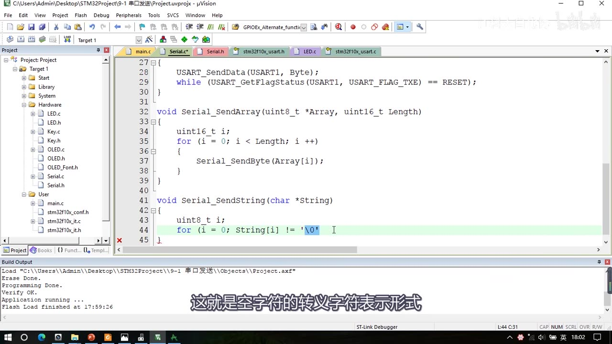
图 10：Serial.c 中 Serial_SendByte 的 while (USART_GetFlagStatus(USART1, USART_FLAG_TXE) == RESET);、Serial_SendArray（for (i = 0; i < Length; i ++) { Serial_SendByte(Array 的 i 号元素); }）与 Serial_SendString 的循环条件 for (i = 0; String 的 i 号元素 != '\0' 正在输入；字幕「这就是空字符的转义字符表示形式」
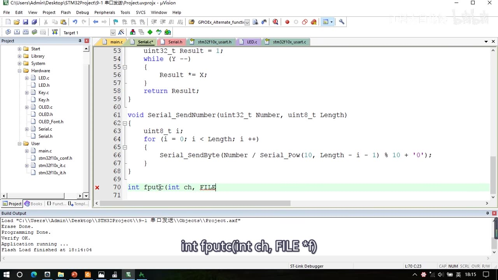
*图 11：Serial.c 中 Serial_Pow（uint32_t Result = 1; while (Y --) { Result *= X; } return Result;）、Serial_SendNumber（for (i = 0; i < Length; i ++) { Serial_SendByte(Number / Serial_Pow(10, Length - i - 1) % 10 + '0'); }），以及开始写 int fputc(int ch, FILE；字幕「int fputc(int ch, FILE f)」
6. printf 的三种移植方法
printf是 C 语言里非常强大的格式化打印函数，默认输出到屏幕；单片机没有屏幕，所以要重定向到串口。
6.1 方法①：Use MicroLIB + 重写 fputc（最常用）
- 打开工程选项，勾上「Use MicroLIB」——MicroLIB 是 Keil 为嵌入式平台优化的精简库，
printf会用到它； - 在
Serial.c里#include <stdio.h>； - 重写
fputc：
int fputc(int ch, FILE *f)
{
Serial_SendByte(ch);
return ch;
}
- 原理：
printf底层就是通过fputc一个字符一个字符地输出，所以把fputc重定向到串口发送，printf就打到串口了； - 测试：
printf("Num=%d\r\n", 666);就能在串口助手看到Num=666； - 踩坑：如果没
#include <stdio.h>，会报隐式声明警告（implicit declaration）——在头文件里补上即可。
6.2 方法②：sprintf + Serial_SendString
- 用
sprintf先把格式化内容写到一个字符串数组里，再Serial_SendString发出去； - 这种方法不涉及重定向、也不需要勾 MicroLIB，适合只想偶尔格式化一次的场合。
6.3 方法③：自己封装 Serial_Printf（可变参数）
void Serial_Printf(char *format, ...)
{
char String[100];
va_list arg;
va_start(arg, format);
vsprintf(String, format, arg);
va_end(arg);
Serial_SendString(String);
}
- 用
va_list / va_start / vsprintf / va_end处理可变参数（要#include <stdarg.h>）； - 其实就是在
sprintf外面再包一层，把格式化结果用Serial_SendString发出去——封装好后用起来和printf一样方便。
作者说：最常见的是第一种（MicroLIB + fputc）；②③ 属于扩展了解。另外 C 标准库里的
printf只有一个，如果想同时保留屏幕输出和串口输出，就要用别的方式（本集笔记不展开）。
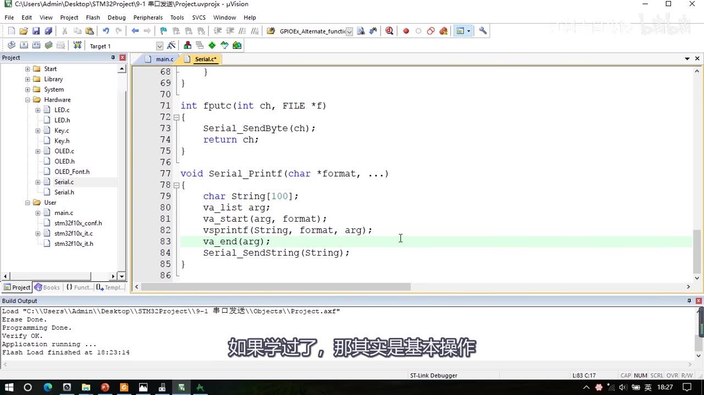
图 12：Serial.c 尾部——int fputc(int ch, FILE *f) { Serial_SendByte(ch); return ch; } 与 void Serial_Printf(char *format, ...) { char String 数组（100 字节）; va_list arg; va_start(arg, format); vsprintf(String, format, arg); va_end(arg); Serial_SendString(String); }；字幕「如果学过了，那其实是基本操作」
6.4 中文乱码怎么办
- 乱码原因：Keil 保存源文件的编码和串口助手解析数据的编码不一致；
- 方案 A（UTF8）：Keil 与串口助手都选 UTF8，并且在工程选项 C/C++ → Misc Controls 里加上
--no-multibyte-chars；这个方案有时兼容性不太好； - 方案 B（GB2312/GBK）：Keil 的 Encoding 选 GB2312，串口助手的编码选 GBK，不用加任何参数、兼容性更好——「推荐这种」；
- 两种方案任选一种、两边保持一致即可；实在乱码也可以用转码软件确认。
6.5 程序一最终现象
- 恢复演示版代码后下载，串口助手（HEX 模式）依次收到：
41（SendByte）、42 43 44 45（SendArray，文本模式下显示ABCDE）、Num1=111（SendString + SendNumber）、Num2=222（printf）、Num3=333（sprintf）、Num4=444（Serial_Printf）——和片头演示完全一样。
7. 程序二：9-2 串口发送+接收
7.1 初始化改动：加 PA10 与接收模式
- 接线不变（两根通信线前面已经都接了），从 9-1 复制代码、改名
9-2 串口发送+接收； - GPIO 增加 PA10：
/* 在 Serial_Init 的 GPIO 部分追加：PA10（USART1_RX）上拉输入 */
GPIO_InitStructure.GPIO_Mode = GPIO_Mode_IPU;
GPIO_InitStructure.GPIO_Pin = GPIO_Pin_10;
GPIO_InitStructure.GPIO_Speed = GPIO_Speed_50MHz;
GPIO_Init(GPIOA, &GPIO_InitStructure);
- RX 引脚配上拉输入
GPIO_Mode_IPU（也可以浮空输入）——串口空闲是高电平，所以不用下拉； USART_Mode改成USART_Mode_Tx | USART_Mode_Rx（同时收发；如果只收不发就去掉 Tx）；- 接收有两种方法：查询法（主循环不断查 RXNE）与中断法（RXNE 触发中断）。
7.2 查询法
uint8_t RxData;
int main(void)
{
OLED_Init();
Serial_Init();
while (1)
{
if (USART_GetFlagStatus(USART1, USART_FLAG_RXNE) == SET)
{
RxData = USART_ReceiveData(USART1);
OLED_ShowHexNum(1, 1, RxData, 2);
Serial_SendByte(RxData);
}
}
}
- 流程：先定义变量
uint8_t RxData存数据 → 主循环判断USART_FLAG_RXNE是否置 1（收到数据）→ 用USART_ReceiveData(USART1)读 DR → 把数据显示在 OLED 上、并原样回传给电脑； USART_ReceiveData内部就是读 DR；读 DR 会自动清 RXNE，所以不需要手动清标志位（手册 SR 位5 也是这么写的）；- 现象：串口助手发送区写
41（HEX 模式，两个数一组）发送 → OLED 显示41、同时接收区回传41；改发AF也一样。
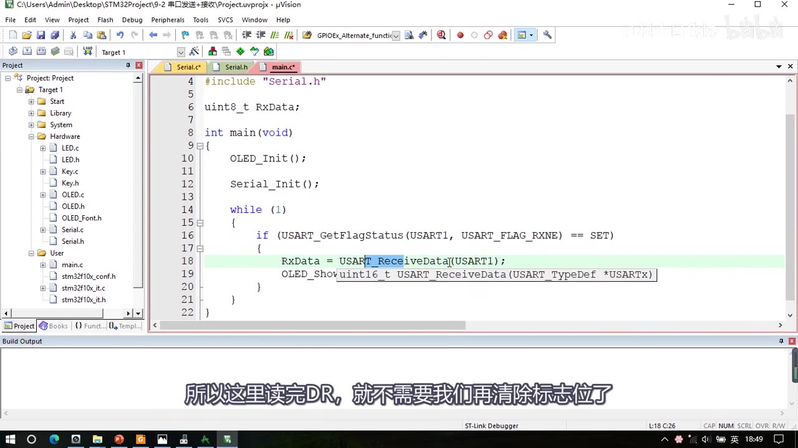
图 13：程序二查询法 main.c——#include "Serial.h"、uint8_t RxData;、OLED_Init(); Serial_Init();，主循环 if (USART_GetFlagStatus(USART1, USART_FLAG_RXNE) == SET) { RxData = USART_ReceiveData(USART1); OLED_Show…（正在输入）；字幕「所以这里读完DR，就不需要我们清除标志位了」
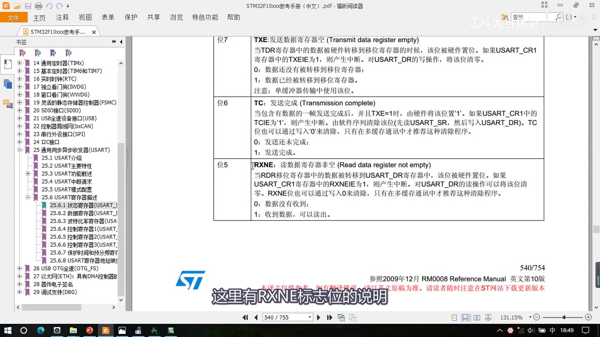
*图 14：参考手册 USART_SR——位7 TXE、位6 TC、位5 RXNE：RDR 数据被转移到 USART_DR 时置位、RXNEIE=1 产生中断、对 USART_DR 的读操作将该位清零、也可写 0 清除（多缓冲通信用）；字幕「这里有RXNE标志位的说明」*
7.3 中断法
① 开启 RXNE 中断 + 配置 NVIC（放在 Serial_Init 里、USART_Cmd 之前）：
USART_ITConfig(USART1, USART_IT_RXNE, ENABLE);
NVIC_PriorityGroupConfig(NVIC_PriorityGroup_2);
NVIC_InitTypeDef NVIC_InitStructure;
NVIC_InitStructure.NVIC_IRQChannel = USART1_IRQn;
NVIC_InitStructure.NVIC_IRQChannelCmd = ENABLE;
NVIC_InitStructure.NVIC_IRQChannelPreemptionPriority = 1;
NVIC_InitStructure.NVIC_IRQChannelSubPriority = 1;
NVIC_Init(&NVIC_InitStructure);
USART_Cmd(USART1, ENABLE);
USART_ITConfig(USART1, USART_IT_RXNE, ENABLE)：开启 RXNE 中断；NVIC_PriorityGroupConfig(NVIC_PriorityGroup_2)：优先级分组 2；然后NVIC_Init：通道USART1_IRQn、使能、抢占优先级 1、子优先级 1——这里是「先随便给」的，实际项目再按需求设计；- 中断函数名查启动文件：
startup_stm32f10x_md.s里写的是USART1_IRQHandler，格式是「外设名 +_IRQHandler」； - RXNE 置 1 时就会申请中断，程序跳进中断函数。
② 中断函数与模块封装：
uint8_t Serial_RxData;
uint8_t Serial_RxFlag;
void USART1_IRQHandler(void)
{
if (USART_GetITStatus(USART1, USART_IT_RXNE) == SET)
{
Serial_RxData = USART_ReceiveData(USART1);
Serial_RxFlag = 1;
USART_ClearITPendingBit(USART1, USART_IT_RXNE);
}
}
uint8_t Serial_GetRxFlag(void)
{
if (Serial_RxFlag == 1)
{
Serial_RxFlag = 0;
return 1;
}
return 0;
}
uint8_t Serial_GetRxData(void)
{
return Serial_RxData;
}
- 在中断函数里接收数据：
USART_GetITStatus(USART1, USART_IT_RXNE) == SET判断是不是 RXNE 中断 → 读 DR 存到全局变量Serial_RxData→ 置标志Serial_RxFlag = 1→USART_ClearITPendingBit(USART1, USART_IT_RXNE)清中断挂起位（注意：读了 DR 其实会自动清 RXNE，但中断挂起位还是要清，所以这句保留）； - 为什么要在中断里转存：中断函数里不适合写太多代码（OLED 显示等应在主循环做），所以中断里只做「读走数据、置标志」，主循环再去取；
Serial_GetRxFlag()：读标志后自动清零（防止重复处理同一个数据）——收到数据时返回 1、否则 0；Serial_GetRxData()：返回收到的数据；- 把这两个函数放头文件声明，main 里改成：
if (Serial_GetRxFlag() == 1)
{
RxData = Serial_GetRxData();
OLED_ShowHexNum(1, 1, RxData, 2);
Serial_SendByte(RxData);
}
- 现象：与查询法一致——HEX 模式发
41→ OLED 显示41、回传41；发42→ 显示/回传42。
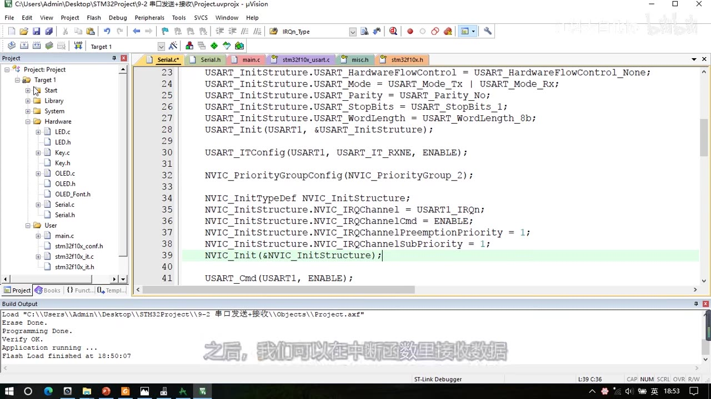
图 15：程序二 Serial.c 的中断配置——USART_Mode = USART_Mode_Tx | USART_Mode_Rx;（可见）、USART_ITConfig(USART1, USART_IT_RXNE, ENABLE);、NVIC_PriorityGroupConfig(NVIC_PriorityGroup_2);、NVIC_InitTypeDef NVIC_InitStructure; + NVIC_IRQChannel = USART1_IRQn、IRQChannelCmd = ENABLE、IRQChannelPreemptionPriority = 1、IRQChannelSubPriority = 1、NVIC_Init(&NVIC_InitStructure);、USART_Cmd(USART1, ENABLE);；字幕「之后，我们可以在中断函数里接收数据」
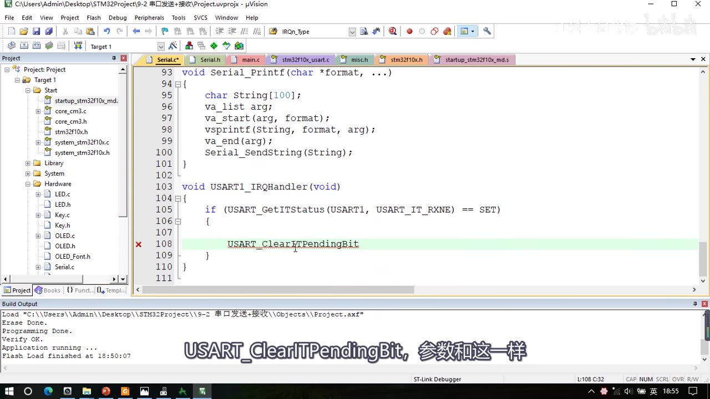
图 16：Serial.c 的 USART1_IRQHandler——if (USART_GetITStatus(USART1, USART_IT_RXNE) == SET) { USART_ClearITPendingBit…（正在输入，行 108 标红）；上方可见 Serial_Printf 的尾部；字幕「USART_ClearITPendingBit，参数和这一样」
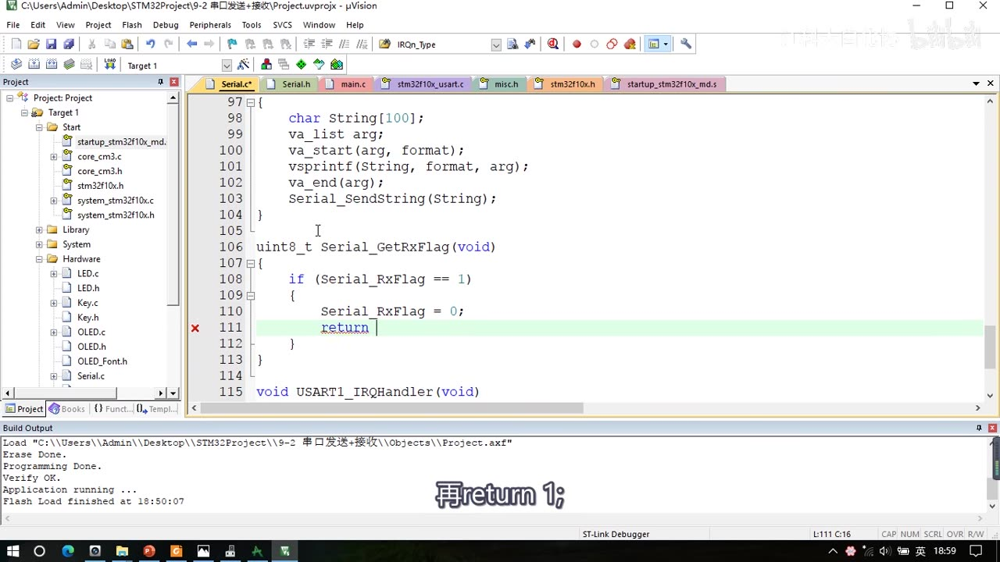
图 17：Serial.c 的 Serial_GetRxFlag——uint8_t Serial_GetRxFlag(void) { if (Serial_RxFlag == 1) { Serial_RxFlag = 0; return …（正在输入 return 1;），下方是 void USART1_IRQHandler(void) 的起始；字幕「再return 1;」
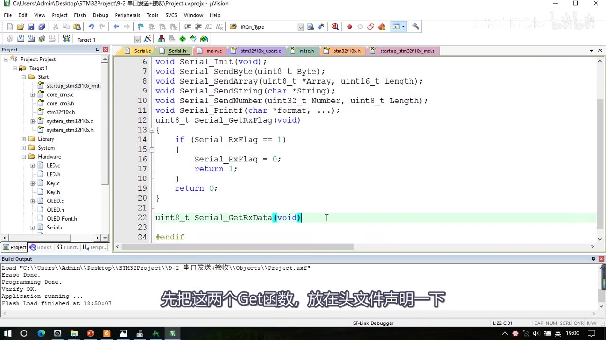
图 18：Serial.h 的函数声明——void Serial_Init(void);、void Serial_SendByte(uint8_t Byte);、void Serial_SendArray(uint8_t *Array, uint16_t Length);、void Serial_SendString(char *String);、void Serial_SendNumber(uint32_t Number, uint8_t Length);、void Serial_Printf(char *format, ...);，以及正在输入的 uint8_t Serial_GetRxFlag(void)；字幕「先把这两个Get函数，放在头文件声明一下」
8. 两个程序代码差异对照
| 项 | 程序一 9-1 串口发送 |
程序二 9-2 串口发送+接收 |
|---|---|---|
| 工程来源 | 复制 OLED 工程 | 复制程序一 |
| GPIO | 只配 PA9（GPIO_Mode_AF_PP） |
PA9（AF_PP）+ PA10（GPIO_Mode_IPU） |
USART_Mode |
USART_Mode_Tx |
USART_Mode_Tx | USART_Mode_Rx |
| 中断 | 无 | USART_ITConfig(RXNE) + NVIC（抢占1/子1） |
| 接收方式 | 无 | 查询法（主循环查 RXNE）/ 中断法（USART1_IRQHandler + GetRxFlag） |
| 额外函数 | SendByte/Array/String/Number、fputc、Serial_Printf | 再加 Serial_GetRxFlag、Serial_GetRxData、USART1_IRQHandler |
| 现象 | 收到 41、ABCDE、Num1～4 | 发 41 → OLED 41 + 回传 41 |
坑与易错点
- TX/RX 必须交叉：模块 RXD 接 STM32 的 TX（PA9）、模块 TXD 接 STM32 的 RX（PA10）；接成 RXD-RXD 一定收不到。
- GND 必须共地：单端信号以 GND 为参考，不共地电平没有比较基准。
- 跳线帽插 VCC-3V3（3.3V TTL）：STM32 是 3.3V 器件；电平选错可能通信异常。
- USART1 的 TX/RX 固定是 PA9/PA10：用 USART2/3 要按引脚定义表换脚。
USART_Init里直接写波特率数值（9600），分频系数库函数自动算，不用手写 BRR。- 只发送时
Mode = USART_Mode_Tx；要接收必须改成Tx | Rx——忘了改就永远收不到。 - 发送一个字节后必须等 TXE：
while (USART_GetFlagStatus(USART1, USART_FLAG_TXE) == RESET);，否则连续写 DR 会覆盖数据。 - TXE 不需要手动清：写 DR 时硬件自动清零——这也是为什么循环里判断的是 TXE 而不用清标志。
- RXNE 读 DR 自动清：查询法里读完
USART_ReceiveData就不用再清 RXNE；但中断里要清中断挂起位USART_ClearITPendingBit。 - RX 引脚配上拉输入或浮空：串口空闲是高电平，不能配下拉。
- 字符串必须
'\0'结尾：Serial_SendString靠String[i] != '\0'判断结束；字符串数组空间比字符数大 1。 - 换行用
\r\n两个字符：只写\n在某些串口助手上不会回到行首。 Serial_Pow是作者自写函数，不是标准库；SendNumber依赖它做十进制拆位，指数要用Length-i-1而不是i。- 不加
'0'偏移就发不出字符：数字 0～9 必须加0x30（或'0'）才是字符'0'～'9'。 - printf 方法①要勾 Use MicroLIB 且
#include <stdio.h>：否则报隐式声明、且可能没输出。 - 中文乱码：UTF8 方案要两边都 UTF8 且加
--no-multibyte-chars；更稳的是两边都用 GB2312/GBK。 - 中断函数名必须与启动文件一致：
USART1_IRQHandler（不是自己随便起名），否则中断进不来。 - 中断里不要写太多代码：只读数据、置标志，显示/处理放主循环（这也是 GetRxFlag 的用途）。
GetRxFlag读后自动清零：主循环处理好一个数据再取下一个，避免同一数据被重复处理。- 本集只支持单字节接收：多字节数据包（帧头/长度/校验）在 P28，本集不要提前用。
时间轴
| 时间 | 内容 |
|---|---|
| 0:01 | 开场：学习串口代码部分，看 9-1 串口发送 |
| 0:11 | 下面是 USB 转串口模块 |
| 0:14 | 跳线帽要插在 VCC 和 3V3 两个脚上，选 3.3V TTL 电平 |
| 0:23 | 通信引脚 TXD/RXD 接 STM32 的 PA9/PA10 |
| 0:30 | 看引脚定义表：USART1 的 TX 是 PA9、RX 是 PA10 |
| 0:41 | 计划用 USART1 通信，所以选这两个脚 |
| 0:46 | 用 USART2/3 就要找对应引脚 |
| 0:53 | TX 和 RX 要交叉连接，注意别接错 |
| 0:58 | PA9 是 STM32 的 TX，接模块的 RXD |
| 1:06 | 模块的 TXD 接 STM32 的 PA10（RX） |
| 1:11 | 两设备负极要接一起共地 |
| 1:21 | 多个系统互连都要共地，电平才有参考 |
| 1:24 | 就像两个人比身高要站在同一地平面 |
| 1:36 | 串口模块和 ST-Link 都要插电脑 |
| 1:41 | 两边都有独立供电，电源正极不接，只接 3 根线 |
| 1:48 | 第一个程序只有发送，一根通信线就够 |
| 1:54 | 但第二个程序要接收，所以两根都接上 |
| 2:07 | 这样两个代码接线图一模一样 |
| 2:11 | 看面包板接线 |
| 2:16 | 拿出串口模块，确保跳线帽在 VCC 和 3V3 |
| 2:26 | 用 3 根公对母杜邦线引出引脚 |
| 2:38 | 棕色是 GND，接电源负极 |
| 2:44 | 红色是 RXD，接 PA9（STM32 的 TX） |
| 2:50 | 橙色是 TXD，接 PA10（STM32 的 RX） |
| 2:58 | 两个 USB 口都插电脑，用 USB 拓展坞 |
| 3:06 | 右键此电脑属性，打开设备管理器 |
| 3:18 | 端口目录看到 CH340，有 COM 号无感叹号即正常 |
| 3:28 | 否则装驱动（第二节软件安装介绍） |
| 3:38 | 回工程目录复制 OLED 工程 |
| 3:44 | 改名 9-1 串口发送，删代码编译 |
| 4:09 | 老规矩先写初始化函数 |
| 4:22 | 第一步开 USART 和 GPIO 时钟 |
| 4:34 | 第三步用结构体配置 USART |
| 4:42 | 第四步只发送就开启 USART；要接收再加中断和 NVIC |
| 5:02 | 初始化完成后调发送/接收/标志位函数 |
| 5:29 | 回代码看库函数列表 |
| 5:44 | 函数很多，但真正常用的很少 |
| 6:02 | DeInit/Init/StructInit 不用说 |
| 6:05 | ClockInit/ClockStructInit 配同步时钟输出 |
| 6:23 | Cmd/ITConfig 不用说 |
| 6:27 | DMACmd 用于开启 DMA 触发信号 |
| 6:35 | 地址、唤醒、LIN 相关函数不用 |
| 6:43 | SendData/ReceiveData 会用到 |
| 6:49 | SendData 写 DR、ReceiveData 读 DR |
| 6:52 | DR 内部其实是 4 个寄存器 |
| 7:10 | 程序上写 DR 就是发送、读 DR 就是接收 |
| 7:28 | 后面是标志位函数 |
| 7:38 | 回初始化写代码 |
| 7:40 | RCC_APB2PeriphClockCmd(RCC_APB2Periph_USART1, ENABLE) |
| 8:03 | 再开 GPIOA 时钟 |
| 8:13 | 引脚定义表：USART1 的 TX/RX 是 PA9/PA10 |
| 8:21 | 第二步初始化 GPIO，从 LED.c 复制 |
| 8:42 | RX 引脚要配输入模式，输入不分普通/复用 |
| 8:54 | 一根线只能一个输出一个输入 |
| 9:00 | RX 配浮空或上拉输入（串口空闲高电平） |
| 9:09 | 引脚模式可以看手册的 GPIO 推荐配置表 |
| 9:18 | 第一个程序只需要发送，选 AF_PP 复用推挽 |
| 9:31 | PA9 复用推挽输出，初始化 GPIOA |
| 9:41 | 第三步初始化 USART，调用 USART_Init |
| 9:47 | 定义 USART_InitTypeDef 结构体变量 |
| 10:30 | 第一个参数波特率，直接写 9600 |
| 10:40 | Init 内部会自动算好 9600 对应的分频系数 |
| 10:53 | 第二个参数硬件流控制 |
| 11:13 | 取值有 None/CTS/RTS/CTS+RTS |
| 11:22 | 不用流控选 None |
| 11:37 | 第三个参数 Mode，Tx/Rx，都要就或起来 |
| 11:59 | 本程序只发送，选 USART_Mode_Tx |
| 12:05 | 第四个参数校验位：No/Odd/Even |
| 12:22 | 不需要校验选 No |
| 12:23 | 第五个参数停止位：0.5/1/1.5/2 位 |
| 12:32 | 第六个参数字长：8/9 位，不需要校验选 8 位 |
| 12:39 | 结构体参数完成：9600/无流控/Tx/无校验/1 位/8 位 |
| 12:55 | 调用 USART_Cmd(USART1, ENABLE) 开启 USART |
| 13:10 | USART 配置完成，写发送数据函数 |
| 13:19 | void Serial_SendByte(uint8_t Byte) |
| 13:28 | 调用 USART_SendData(USART1, Byte) |
| 13:38 | 看 SendData 内部：USARTx->DR = Data & 0x01FF |
| 13:50 | 数据最终通向 DR（TDR） |
| 14:30 | 数据由硬件转移到移位寄存器再发出去 |
| 14:40 | 库函数只负责写 DR，后面的等待要自己做 |
| 14:46 | 写完必须等待，否则下一个数据会覆盖 |
| 15:05 | 用 USART_GetFlagStatus 等标志位 |
| 15:27 | 用 TXE（发送数据寄存器空）标志 |
| 15:41 | 套 while 循环：TXE == RESET 就一直循环 |
| 15:43 | 看手册 SR：TXE 数据转移时硬件置位 |
| 16:10 | 对 USART_DR 的写操作将该位清零 |
| 16:21 | 所以不需要手动清标志位 |
| 16:30 | Serial_SendByte 完成 |
| 16:32 | 两个函数放头文件声明 |
| 16:53 | 编译 |
| 17:02 | main 里 Serial_Init 后调用 Serial_SendByte |
| 17:16 | 上电初始化后通过串口发一次 0x41 |
| 17:25 | 打开串口助手，选 COM 号 |
| 18:00 | 参数要与程序一致：9600/8/1/无 |
| 18:40 | 按复位，收到 41 |
| 18:48 | 接收模式选 HEX，显示原始数据 41 |
| 19:00 | 切文本模式，显示字符 A |
| 19:15 | 看 PPT 数据模式：HEX 模式显示原始数据 |
| 19:53 | 文本/字符模式：按编码查表显示 |
| 20:06 | ASCII 表：0x41=A、0x61=a、0x30～0x39=0～9 |
| 20:40 | 还有不可见的控制字符 |
| 20:50 | 0x00 是空字符，也是字符串结束标志 |
| 21:26 | 汉字要按多字节字符集编码 |
| 21:34 | 常见中文编码：GB2312/GBK/GB18030 |
| 21:41 | 外国字符集有 Unicode/UTF8 |
| 22:05 | 收发模型：发送方编码、接收方译码 |
| 22:44 | 回程序，SendByte 里写 'A' 就是发 0x41 |
| 23:29 | 接下来封装常用发送函数 |
| 23:55 | 先是发送数组 Serial_SendArray |
| 24:09 | 参数：数组指针 + 长度 |
| 24:34 | 数组没法判断结束，所以必须给长度 |
| 25:00 | for 循环执行 Length 次，每次 SendByte |
| 25:33 | 头文件声明后测试，发 42～45 |
| 26:36 | 再封装发送字符串 Serial_SendString |
| 26:47 | 参数 char *String，不需要长度 |
| 27:02 | 循环条件用 '\0' 判断字符串结束 |
| 28:05 | 转义字符 \r\n 实现换行 |
| 29:39 | 再封装发送数字 Serial_SendNumber |
| 30:03 | 参数 uint32_t Number + uint8_t Length |
| 30:36 | 十进制拆位原理：数字/10^x%10 |
| 31:31 | 先写次方函数 Serial_Pow（作者自写） |
| 32:23 | 回 SendNumber，循环指数用 Length-i-1 |
| 33:37 | 最后加 '0' 偏移转成字符数字 |
| 34:30 | 测试 Serial_SendNumber(12345, 5) 显示 12345 |
| 35:10 | 介绍 printf 移植：打开工程选项勾 Use MicroLIB |
| 35:52 | Serial.c 里 include stdio.h 并重写 fputc |
| 36:05 | fputc 里调用 Serial_SendByte(ch) |
| 36:45 | 主函数测试 printf 打印 |
| 37:23 | 有隐式声明警告，头文件加 stdio.h |
| 38:13 | 现象打印 Num=666 |
| 38:45 | 另外两种方法：sprintf + SendString |
| 39:22 | sprintf 不需要重定向，也不用勾 MicroLIB |
| 40:00 | 第三种：封装 Serial_Printf |
| 40:57 | 用 va_list 处理可变参数，需 include stdarg.h |
| 41:29 | Serial_Printf 里定义字符串、vsprintf、SendString |
| 42:40 | 测试 Serial_Printf 打印 |
| 43:04 | 以上是 printf 移植方法，最常用第一种 |
| 43:08 | 汉字乱码：编码格式不一致导致 |
| 43:15 | 方案一 UTF8：Keil 与串口助手都选 UTF8 |
| 43:48 | 并在 C/C++ 杂项加 --no-multibyte-chars |
| 44:35 | UTF8 方案有时兼容性不好 |
| 44:41 | 方案二：都改成 GB2312/GBK，不用加参数 |
| 45:53 | 两种方案总结 |
| 46:28 | 恢复演示版代码，演示程序一最终现象 |
| 47:50 | 开始学串口接收，接线不变 |
| 48:05 | 复制 9-1 改名 9-2 串口发送+接收 |
| 48:19 | 初始化里加接收：GPIO 增加 PA10 |
| 48:41 | PA10 配 GPIO_Mode_IPU 上拉输入 |
| 48:51 | Mode 改成 USART_Mode_Tx 或 USART_Mode_Rx |
| 49:18 | 接收有查询和中断两种方法 |
| 49:50 | 查询法：主循环判断 RXNE |
| 50:05 | if (USART_GetFlagStatus(USART1, USART_FLAG_RXNE) == SET) |
| 50:26 | RxData = USART_ReceiveData(USART1) |
| 51:23 | 显示并回传，读 DR 自动清标志 |
| 51:55 | 串口助手 HEX 模式发送 41 |
| 52:23 | OLED 显示 41、回传 41 |
| 52:42 | 中断法：USART_ITConfig 开 RXNE 中断 |
| 53:08 | NVIC_PriorityGroupConfig(NVIC_PriorityGroup_2) |
| 53:25 | NVIC_Init：通道 USART1_IRQn、抢占 1、子 1 |
| 54:00 | RXNE 置 1 时申请中断 |
| 54:22 | 中断函数名 USART1_IRQHandler（看启动文件） |
| 54:40 | USART_GetITStatus 判断 RXNE |
| 55:07 | USART_ClearITPendingBit 清中断挂起位 |
| 55:50 | 中断里读 DR 存到全局变量 |
| 55:55 | 定义 Serial_RxData/Serial_RxFlag |
| 56:37 | 封装 Serial_GetRxFlag（读后自动清零） |
| 57:11 | 封装 Serial_GetRxData |
| 57:56 | 两个 Get 函数放头文件声明 |
| 58:15 | main 改成用 Get 函数读取 |
| 58:59 | 编译下载，HEX 模式收发 |
| 59:15 | 发 41，OLED 显示 41 并回传 41 |
| 59:22 | 发 42 同理 |
| 59:30 | 本集内容差不多结束 |
| 59:32 | 目前只支持 1 个字节的接收，功能比较简单 |
| 59:40 | 很多模块需要回传大量数据，要用数据包形式传输 |
| 59:49 | 数据包发送和接收是常见且重要的内容 |
| 59:54 | 串口进阶内容下一小节继续讲解 |
存疑
- 本集文本来自画面硬字幕的 OCR（PP-OCRv4，source=subtitle-ocr，947 段），不是 ASR。本集是 60 分钟长片，Keil 编译输出污染极多（
compiling ...、linking...、"..\Objects\Project.axf" - 0 Error(s), 0 Warning(s)、Flash Load finished at ...、Programming Done.、Application running ...），这些不是老师口述内容；另有行首噪声（门等）。典型 OCR 错字（本集实际出现）：Serial_SendByte→ 「SerialSendByte/Serial SendByte」、va_list arg→ 「va_listarg」、函数名下划线漏识别（USART_SendData→「USARTSendData」等），已按画面校正。 - 两个程序的代码差异必须区分：程序①只配 PA9（
GPIO_Mode_AF_PP）、USART_Mode = USART_Mode_Tx；程序②再加 PA10（GPIO_Mode_IPU）、USART_Mode = USART_Mode_Tx | USART_Mode_Rx；本笔记第 8 章给了对照表，别把两个版本的Serial_Init混写。 - PA10 的 GPIO 初始化行没有抓到完整帧（本集帧间隔 14 秒）：第 7.1 节的
GPIO_Mode_IPU / GPIO_Pin_10代码块依据口述 48:35–48:47与程序①的 GPIO 结构类推，行序与写法以口述为准。 - 个别代码行未被帧捕获：
Serial_GetRxData函数体一行、OLED_ShowString/ShowNum的列号（第 7.3 节 main）以口述 + 相邻帧为准；Serial_Init里USART_Cmd前的顺序（ITConfig → NVIC → Cmd）与 f_00233 一致。 - 中断优先级数值：f_00233 画面显示
NVIC_IRQChannelPreemptionPriority = 1、NVIC_IRQChannelSubPriority = 1（collect_report 里写的是「子 0」，以画面为准）；老师也明确说优先级是「先随便给」的，不是精心设计。 Serial_Pow是作者自写函数（uint32_t Serial_Pow(uint32_t X, uint32_t Y)），不是标准库函数，本笔记按自写标注。- printf 三种方法：①MicroLIB + fputc 最常用；②sprintf + SendString、③Serial_Printf 属扩展，作者说「最常见的是第一种」——本笔记没有把 ②③ 写成必须。
- 本集未涉及：DMA 串口收发、多字节数据包（片尾 59:26 明确「下一小节讲数据包」→ P28）、
USART_ITConfig只配 RXNE；没有讲USART_SendData的等待 TC 写法（只用 TXE）。 - 片尾无具体下集编号：只说「串口进阶内容下一小节继续」，按内容顺序多字节数据包在 P28。